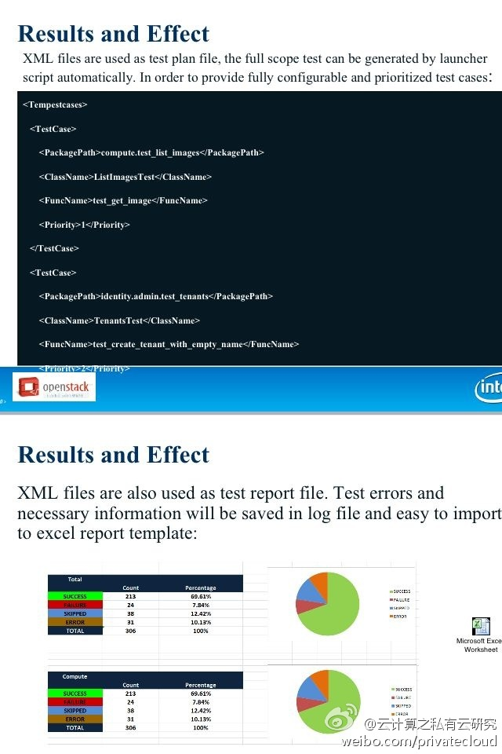

回复@刘江总编:我为C3沙龙开了个博客专栏，本来就是应陈博士的倡议，收集资料用的，可惜只参加了两次，也只发了两篇。网页链接 //@刘江总编:在CSDN上给#C3沙龙#开个区，存放PPT之类的资料吧。 @Ada李力 @CSDN云计算@云计算之私有云研究:拿到 @小伙凯文 为今晚准备的Openstack发行版测试话题的Ppt，很详细，值得期待。贴个图先买个小关子，预知详细细节，国内搞Openstack很多，能出发行版的很少，欢迎参加今晚#C3沙龙#上海第十次活动,云计算开喷之夜，话题：1)Joyent技术体系介绍 2)Openstack的发行版本测试 ， 报名 网页链接 